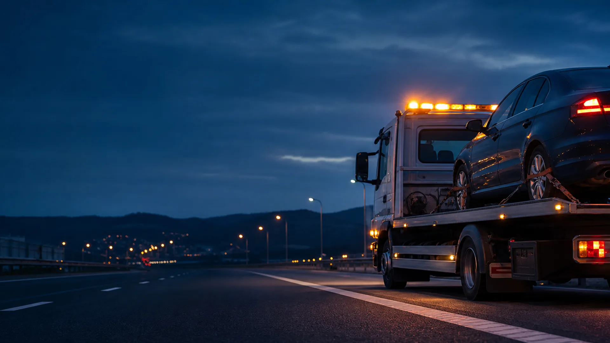

Tractări auto pe platformă
Platformă auto pentru autoturisme, dube, autoutilitare, 4x4, SUV, ATV, motociclete și utilaje de până la 3,5 t.
- Roți rupte sau blocate
- Autovehicule cu gardă joasă
de la150 lei+ 2,5 lei/km
Asistență rutieră Pitești Argeș · 24/7
Tractare, asistență rutieră și transport auto în Pitești, pe A1 și în județul Argeș. Confirmăm soluția și costul înainte să pornim.
Servicii disponibile
Alegem metoda potrivită pentru vehicul și acces, fără operațiuni inutile și fără costuri necomunicate.
Platformă auto pentru autoturisme, dube, autoutilitare, 4x4, SUV, ATV, motociclete și utilaje de până la 3,5 t.
Depanare când mașina nu mai pornește: pană, baterie descărcată, diagnoză cu tester sau alte defecțiuni la fața locului.
Transport auto sau moto la service autorizat, transport pentru utilaje, materiale de construcții și obiecte voluminoase.
Asistență pe A1, Drumul Expres DEx12 Pitești–Craiova și pe drumurile naționale din Argeș. Ne trimiți poziția și sensul de mers.
Capacități extinse
Spune-ne ce trebuie tractat, reparat sau transportat. Confirmăm telefonic soluția potrivită și condițiile de preluare.
01Vehicule și utilaje
02Asistență la fața locului
03Transport special și internațional

Tarife simple
Ne trimiți locația și datele mașinii, iar noi îți spunem direct soluția potrivită și estimarea de preț.
Intervenție
de la 150 leiDeplasare
2,5 lei/kmPrețul final poate varia în funcție de distanță, acces, tipul vehiculului și complexitatea încărcării.
Cum lucrăm
Un proces simplu, gândit pentru momente în care timpul contează.
Spune-ne modelul mașinii și problema întâmpinată.
Primești soluția, disponibilitatea și costul estimat.
Ridicăm și transportăm vehiculul în condiții sigure.
Acoperire extinsă
Explorează harta: o poți deplasa și poți folosi zoom-ul pentru a vedea punctele principale din Argeș și împrejurimi.
Pitești și împrejurimiPitești, Geamăna, Mărăcineni, Bascov, Oarja, Teiu, Rătești și Căteasca
DEx12 Pitești–CraiovaSuseni, Costești, Cerbu, Albota, Lunca Corbului, Negreni, Colonești, Buzoești și Rociu
Estul județuluiCălinești, Topoloveni, Leordeni și Ionești
DN7 și TransfăgărășanDedulești, Morărești, Drăganu, Țigveni, Curtea de Argeș, Corbeni, Domnești, Arefu și Vidraru
Ai nevoie de ajutor acum?
Disponibili non-stop, inclusiv în weekend și de sărbători.